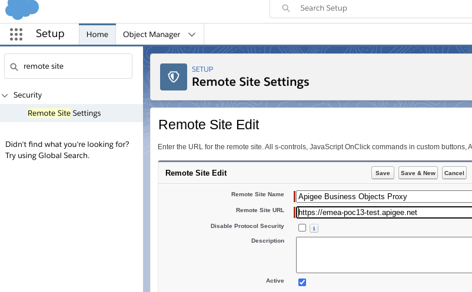

Last Updated: 2020-2-18
Use-Case
Customers who use Salesforce for CRM data and SAP for other ERP data are commonly confronted with the task of integrating and synchronizing data between these systems (and perhaps more smaller or homemade services in between).
APIs can be a powerful tool to do integration. The key to this approach is to have clean, modular APIs in between all communication. Then we can easily connect those APIs to each of the different systems, and be able to exchange, migrate or update those systems seamlessly in the background. This can actually have a huge impact on operations - with zero downtime migrations / updates basically for free because of the API facades governing and managing all of the integrations.
This is not something that you can achieve overnight, but with the right foresight and planning, an API-First approach to integration can save thousands of person hours in migration and modernization effort.

In the diagram above, we see the approach of having an independent integration in the Apigee API between Salesforce and SAP, managed by Apigee, and allowing the easy integration of further microservices and ecosystem apps, with access managed through a developer portal.
This approach can be generalized and applied to all integrations with backend systems - an API-First approach to integration is a great strategy to gain more freedom and reduce sticky dependencies in your service and app landscape.
What you'll build
In this lab, you will connect a Salesforce sandbox environment to a REST API in Apigee that integrates with the OData Business Partner interface from SAP. Using Salesforce you will then create a process flow that sends newly created Account records to the API which will then also create the Business Partner record in SAP.
What you'll learn
- How to create an API in Apigee for a topic like customer records
- How to create a developer portal to manage access to the API
- How to connect Salesforce to the API through Apex classes and process flows
- How to integrate the API to an OData SAP interface and mask the complexity from all clients
What you'll need
- A recent version of Chrome (74 or later)
- An evaluation account in Apigee (sign up for free at apigee.com/edge)
- If you want to keep your Salesforce sandbox for longer than 12 hours, you will need a real developer account at developer.salesforce.com.
Apigee setup
If you already have an Apigee account, then you can skip this part. If not register for a free evaluation Apigee account here.
We will be importing a proxy bundle for our API between Salesforce and SAP. Download this Apigee proxy bundle ZIP file from Github to get started.
Now login to your Apigee account, go to the API Proxies page, and click the "+Proxy" button in the upper right corner.
Now click on "Upload proxy bundle" to upload the Apigee proxy bundle ZIP file that we downloaded in the previous step.
Click "Create" to go ahead and create the proxy.
After creating, click on "Edit proxy" to go to the proxy overview page. Click on "Deployment->test" to deploy the proxy to your test environment (if you don't have a test environment, simply deploy it to any environment that you want to use - it doesn't have to be "test").
After deploying, you should see the successful deployment under Deployments.
Copy the URL displayed under Deployments - we will use this later to configure the API endpoint from Salesforce. In the image above it is: https://emea-poc13-test.apigee.net/business-objects-api
You can also test the API under the "Trace" tab in the upper-right corner of the Proxy Overview page. If you start a trace session, and call the /health endpoint, you should get a 200 response with a Response Content of {"status":"UP"}.
Congratulations! You now have a proxy up and running that can receive requests from Salesforce or any other client that wants to work with business object data.
Salesforce setup
Salesforce provides a variety of ways to get a test sandbox environment of Salesforce with test data. If you have a developer account you can use your own sandbox, or create a free one here.
Configure Salesforce
Now let's configure our Salesforce environment.
Add Remote Site configuration
Here we are going to configure your Apigee proxy as an allowed Remote Site for your Salesforce instance to connect to. More information on Remote Site Settings can be found here.
Start by clicking the Gear Icon in the upper right corner, and clicking on Setup (Setup for the current app).
This should open the SETUP console in a new tab. Type "Remote Site" into the Quick FInd box to find the Remote Site Settings.
Click on the Remote Site Settings link. Here we can add remote sites to our sandbox that we are allowed to call from process or flows in Salesforce.
Click on the New Remote Site button and add the base URL of our Apigee proxy that we imported in the previous section. For my proxy, the base URL is "https://emea-poc13-test.apigee.net".

Click Save.
SAP setup
For the purpose of this lab, it is easiest to use a SAP Business Partner mock class which allows us to use the OData APIs without an actual SAP system. Here we have two mock classes, one for BusinessPartners and one for SalesOrders.
Business Partners
Here is the sample OData mock project for SAP Business Partner data.
This mock is very easy to deploy to Cloud Run (just click the Run on Google Cloud button in the repo above), or you easily just reuse the deployment here (and is configured by default in the Apigee proxy that we deployed).
https://sap-s4-mock-h7pi7igbcq-ew.a.run.app/sap/opu/odata/sap/API_BUSINESS_PARTNER/A_BusinessPartner
The mock service just stores the data in memory, so any added records are lost after the Cloud Run instance is killed after around 10 minutes of idle time. There are 5 records that are always available.
You can verify that your deployment (or the one above) is working properly by just running this command to see the default data made available by the endpoint.
curl "https://sap-s4-mock-h7pi7igbcq-ew.a.run.app/sap/opu/odata/sap/API_BUSINESS_PARTNER/A_BusinessPartner" | json_ppSales Orders
Similarly we have a sample OData mock project for SAP Sales Order data here.
You can deploy the project to Cloud Run with one-click in the repo above, or use this already deployed endpoint (which is also configured by default in the Apigee proxy that we deployed).
https://sap-orders-mock-h7pi7igbcq-ew.a.run.app/sap/opu/odata/sap/API_SALES_ORDER_SRV/A_SalesOrder
You can verify that the deployment is working by running this command to see sample Sales Order data.
curl "https://sap-orders-mock-h7pi7igbcq-ew.a.run.app/sap/opu/odata/sap/API_SALES_ORDER_SRV/A_SalesOrder" | json_ppAdd an Apex Class for Accounts
Now we are going to configure an Apex Class in Salesforce to be triggered when Accounts are created in Salesforce through a Process Builder process. This class will call our Apigee API with the data, which we will then convert and send to SAP.
An Apex Class is a serverless framework that can be used to execute code logic within the Salesforce environment. Apex is based on Java. More information can be found here. We are going to be using an Apex Class to call our Apigee proxy.
To add our serverless Apex Class go again to the Salesforce Settings tab and search in the Quick Find for Apex Classes. Click on the Apex Classes link.
Click on New to add a new class.
Paste this code into the Apex Class editor. Change the URL request.setEndpoint('https://emea-poc13-test.apigee.net/business-objects-api/customers'); in the code to the URL of your Apigee proxy that you deployed in the Apigee setup.
public inherited sharing class ApigeeCustomer {
@InvocableMethod(label='Apigee Business Objects Customer API' description='Class to connect to Apigee Business Objects API')
public static void invokeAPI(List<String> name) {
// Execute Query here
System.enqueueJob(new RestApiCall(name));
}
public class RestApiCall implements System.Queueable, Database.AllowsCallouts {
List<String> name = new List<String>();
public RestApiCall(List<String> accountName){
this.name = accountName ;
}
public void execute(System.QueueableContext ctx) {
// Query necessary Data
String accountName = this.name[0];
String body = '{ "BusinessPartnerFullName": "' + this.name[0] + '" }'; //populate body
Http http = new Http();
HttpRequest request = new HttpRequest();
request.setEndpoint('https://emea-poc13-test.apigee.net/business-objects-api/customers');
request.setHeader('Content-Type', 'application/json;charset=UTF-8');
request.setMethod('POST');// could be GET/POST
request.setBody(body);// only needed for POST
HttpResponse response = http.send(request);
if (response.getStatusCode() == 201) {
Map<String, Object> results = (Map<String, Object>) JSON.deserializeUntyped(response.getBody());
Account accountToUpdate;
try {
accountToUpdate =
[SELECT Description FROM Account
WHERE Name = :accountName
LIMIT 1];
// Update the billing city.
accountToUpdate.Description = 'SAP Business Partner UUID: ' + (String)results.get('BusinessPartnerUUID');
// Make the update call.
update accountToUpdate;
} catch(DmlException e) {
System.debug('An unexpected error has occurred: ' + e.getMessage());
}
}
else {
Account accountToUpdate;
try {
accountToUpdate =
[SELECT Description FROM Account
WHERE Name = :accountName
LIMIT 1];
accountToUpdate.Description = '13 is an unlucky number, SAP BusinessPartner rejected.';
// Make the update call.
update accountToUpdate;
} catch(DmlException e) {
System.debug('An unexpected error has occurred: ' + e.getMessage());
}
}
}
}
}
Create a Process Builder process for Accounts
Now we are going to create a process in Process Builder to call our Apex Class when a new Account is created. More information on Process Builder can be found here.
In the Settings menu type "Process Builder" into the Quick Find to link to the Process Builder console.
Click the New button to create a new process.
Give the process a name like Apigee Customer and click that the process should start when A record changes.
Now click the + Add Object box at the top of the designer and select the Account object and and that the process should only be started when a record is created.
Click Save.
Now click + Add Criteria, add a Name like "True" and select No criteria-just execute the actions!
Click Save.
Now click the +Add Action button under Immediate Actions.
Fill in the fields with Action Type set to Apex, Action Name set to New customer and Apex Class set to the Apex Class that we created in the previous step.
Also add an entry to Set Apex Variables for name as Field Reference to the record property [Account].Name. The last field reference can be selected with a field picker. This simply means that we will pass the newly created Account Name to our Apex Class in the name variable.
After clicking Save click on Activate in the upper right corner, and after confirming the activation, our process is now listening for newly created Account records.
Test Account / BusinessPartner Integration
Now that we have all of the pieces setup, we can test the integration flow.
To start with, let's test our API to retrieve all current SAP Business Partners. For this you can use curl, or my favorite API tester Talend API Tester.
curl "https://emea-poc13-test.apigee.net/business-objects-api/customers" | json_ppHere are the results in Talend, as you can see we have 5 current partner records.
As you can see above, the results are also simplified by the proxy to make the JSON objects more REST resource-conform. You can see the policy in the Apigee proxy that does this by looking in the Proxy Endpoint PostFlow, where a policy beautify-json.js is applied to beautify the return object. You can also disable the policy, and then you will get the raw OData return structures from SAP.
Go to your Apigee tab, make sure our Business-Objects-API proxy is opened, and switch to the Trace tab on the upper right corner. Go ahead and start a trace by clicking the green button Start Trace Session.
In a trace session, we will see all of the request and response traces that flow through this API proxy. Add the path /health (so for example a full URL that looks like https://emea-poc13-test.apigee.net/business-objects-api/health) to the URL in the Send Request panel and click Send to send a test request. You should see a 200 response.

Now that our trace session is running, we can create a new Account record in Salesforce, and watch it flow through the API into our SAP backend.
- Go to Salesforce, open the Sales Console, and then the Accounts page.
- Click the New button in the upper right corner.
- Give the Account a name like "New business partner 1"
- Click Save
Now check your Apigee trace window, you should see a successful 201 call with a very simple input payload, and much larger return payload.

And now return to your curl or Talend API tester, and re-run the GET command to see all business partners.
curl "https://emea-poc13-test.apigee.net/business-objects-api/customers" | json_ppNow you should see 6 results, including your "New business partner 1" in the last row.
And now check back in Salesforce, and you should see the return BusinessPartnerUUID from SAP added in the Description field of the Account record.
Test Error Handling
A common question is what happens when something goes wrong in the communication? You can test this here too, just by creating a new Account with a name that ends with 13. So for example Company13.
You'll notice that in our Apigee proxy in the Endpoint PreFlow we have an error simulator policy that checks all incoming traffic for names that end in 13, and if so immediately returns a 500 result to the client. After testing with the Company13 Account record above, you should also see an error text in the Salesforce Description field with the reason, which could theoretically be corrected (remove the 13!) and resubmitted to the proxy.
Conclusion
Congratulations! You've now completed an end-to-end API-First integration between Salesforce and SAP, and have a new REST API that can be further extended with new integrations, unified security like OAuth 2.0 and JWT policies, and traffic shaping to make sure that your backend SAP system isn't overloaded by all of your new customers.
Now similarly to Accounts we will create an integration between Salesforce Orders and SAP SalesOrders. This process is the exact same as for Accounts as done above, but just for Order objects and using the orders Apigee API in the same Apigee proxy.
Add an Apex Class for Orders
Now we are going to configure an Apex Class in Salesforce to be triggered when Orders are created in Salesforce through a Process Builder process. This class will call our Apigee API with the data, which we will then convert and send to SAP.
An Apex Class is a serverless framework that can be used to execute code logic within the Salesforce environment. Apex is based on Java. More information can be found here. We are going to be using an Apex Class to call our Apigee proxy.
To add our serverless Apex Class go again to the Salesforce Settings tab and search in the Quick Find for Apex Classes. Click on the Apex Classes link.
Click on New to add a new class.
Paste this code into the Alex Class editor. Change the URL request.setEndpoint('https://emea-poc13-test.apigee.net/business-objects-api/orders); in the code to the URL of your Apigee proxy that you deployed in the Apigee setup.
public inherited sharing class ApigeeOrder {
@InvocableMethod(label='Apigee Business Objects Order API' description='Class to connect to Apigee Business Objects API')
public static void invokeAPI(List<String> name) {
// Execute Query here
System.enqueueJob(new RestApiCall(name));
}
public class RestApiCall implements System.Queueable, Database.AllowsCallouts {
List<String> name = new List<String>();
public RestApiCall(List<String> accountName){
this.name = accountName ;
}
public void execute(System.QueueableContext ctx) {
// Query necessary Data
String orderName = this.name[0];
String body = '{ "SalesOrder": "' + this.name[0] + '"}'; //populate body
Http http = new Http();
HttpRequest request = new HttpRequest();
request.setEndpoint('https://emea-poc13-test.apigee.net/business-objects-api/orders');
request.setHeader('Content-Type', 'application/json;charset=UTF-8');
request.setMethod('POST');// could be GET/POST
request.setBody(body);// only needed for POST
HttpResponse response = http.send(request);
if (response.getStatusCode() == 201) {
Map<String, Object> results = (Map<String, Object>) JSON.deserializeUntyped(response.getBody());
Order orderToUpdate;
try {
orderToUpdate=
[SELECT Description FROM Order
WHERE OrderNumber = :orderName
LIMIT 1];
orderToUpdate.Description = 'Requested Delivery Date: ' + (String)(results.get('RequestedDeliveryDate'));
// Make the update call.
update orderToUpdate;
} catch(DmlException e) {
System.debug('An unexpected error has occurred: ' + e.getMessage());
}
}
else {
Order orderToUpdate;
try {
orderToUpdate=
[SELECT Description FROM Order
WHERE OrderNumber = :orderName
LIMIT 1];
orderToUpdate.Description = 'SAP Update Error';
// Make the update call.
update orderToUpdate;
} catch(DmlException e) {
System.debug('An unexpected error has occurred: ' + e.getMessage());
}
}
}
}
}
Create a Process Builder process for Orders
Now we are going to create a process in Process Builder to call our Apex Class when a new Account is created. More information on Process Builder can be found here.
In the Settings menu type "Process Builder" into the Quick Find to link to the Process Builder console.
Click the New button to create a new process.
Give the process a name like Apigee Orders and click that the process should start when A record changes.
Now click the + Add Object box at the top of the designer and select the Orders object and that the process should only be started when a record is created.
Click Save.
Now click + Add Criteria, add a Name like "True" and select No criteria-just execute the actions!
Click Save.
Now click the +Add Action button under Immediate Actions.
Fill in the fields with Action Type set to Apex, Action Name set to New order and Apex Class set to the Apex Class that we created for orders (Apigee Orders).
Also add an entry to Set Apex Variables for name as Field Reference to the record property [Order].OrderNumber. The last field reference can be selected with a field picker. This simply means that we will pass the newly created Order Number to our Apex Class in the name variable.
After clicking Save click on Activate in the upper right corner, and after confirming the activation, our process is now listening for newly created Account records.
Test Orders / SalesOrders Integration
Now that we have all of the pieces setup, we can test the integration flow.
To start with, let's test our API to retrieve all current SAP Business Partners. For this you can use curl, or my favorite API tester Talend API Tester.
curl "https://emea-poc13-test.apigee.net/business-objects-api/orders" | json_ppHere are the results in Talend, as you can see we have 3 current sales order records.
Go to your Apigee tab, make sure our Business-Objects-API proxy is opened, and switch to the Trace tab on the upper right corner. Go ahead and start a trace by clicking the green button Start Trace Session.
In a trace session, we will see all of the request and response traces that flow through this API proxy. Add the path /health (so for example a full URL that looks like https://emea-poc13-test.apigee.net/business-objects-api/health) to the URL in the Send Request panel and click Send to send a test request. You should see a 200 response.
Now that our trace session is running, we can create a new Order record in Salesforce, and watch it flow through the API into our SAP backend.
- Go to Salesforce, open the Sales Console, and then the Orders page.
- Click the New button in the upper right corner.
- Select an existing account and create a new contract if necessary to save the Order.
- Click Save
Now check your Apigee trace window, you should see a successful 201 call with a very simple input payload, and much larger return payload.
And now return to your curl or Talend API tester, and re-run the GET command to see all business partners.
curl "https://emea-poc13-test.apigee.net/business-objects-api/orders" | json_ppNow you should see 4 results, including your "new order" in the last row.
And now check back in Salesforce, and you should see data returned from SAP added to the Description field.
Congratulations! You've now completed an end-to-end API-First integration between Salesforce and SAP, and have a new REST API that can be further extended with new integrations, new unified security like OAuth 2.0 and JWT policies, and traffic shaping to make sure that your backend SAP system isn't overloaded by all of your new customers and sales orders.
Now that you have deployed your API, dive deeper into more features with these tutorials.